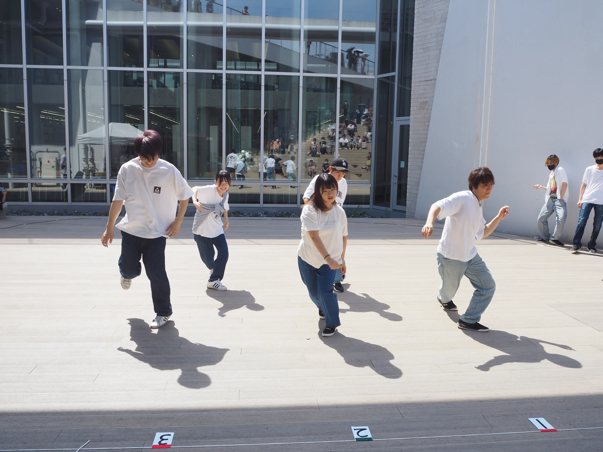
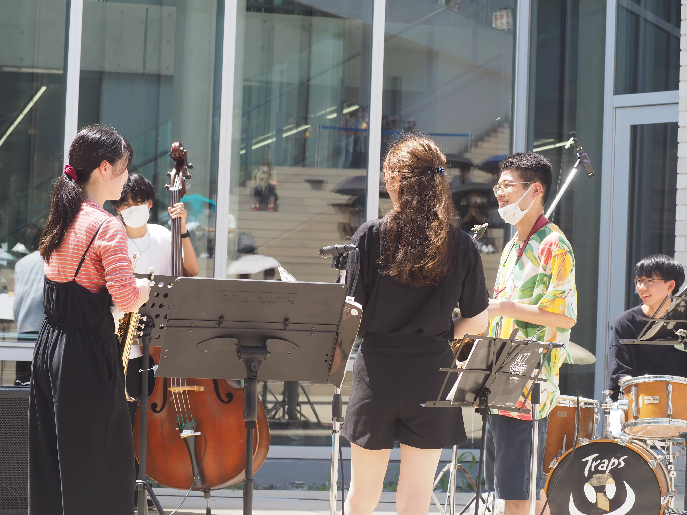
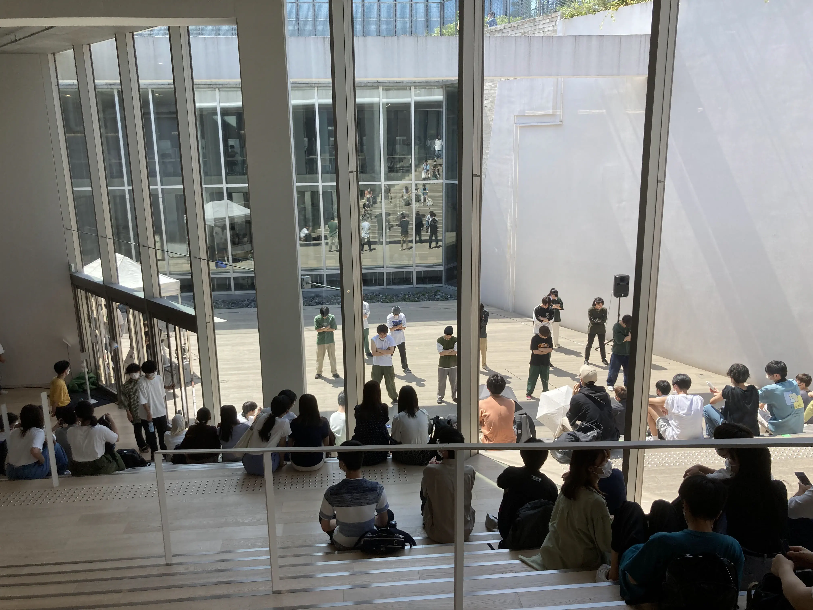
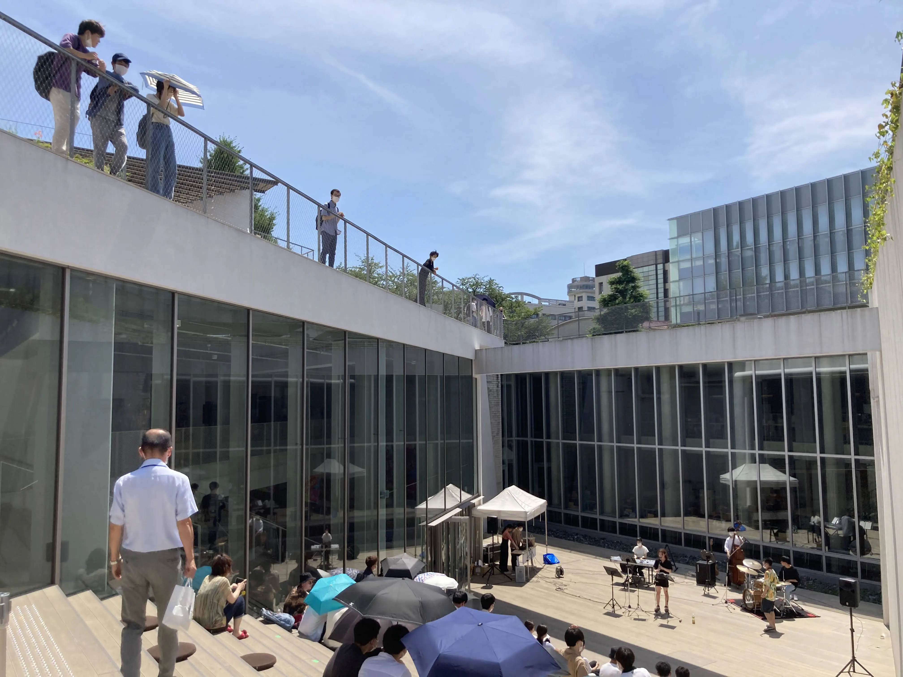
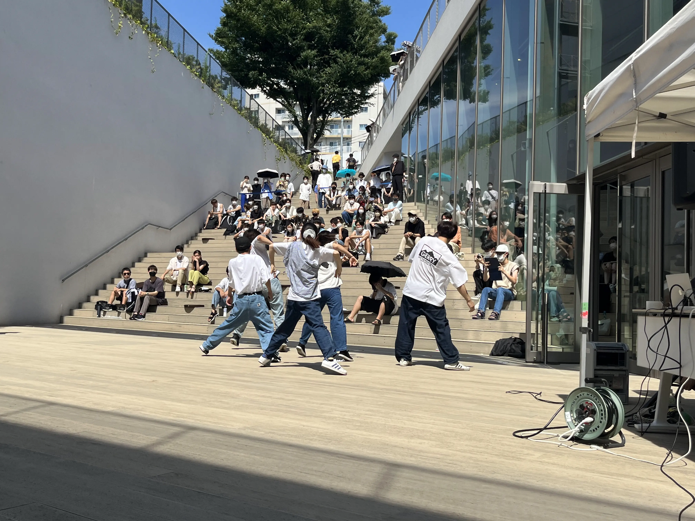
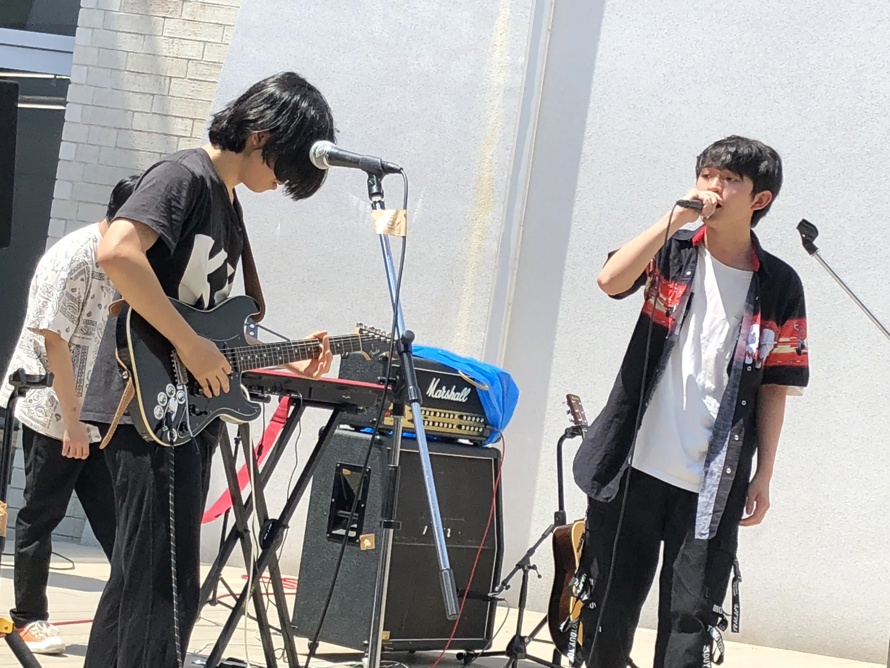
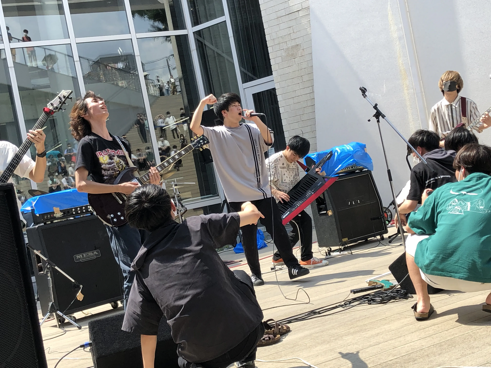
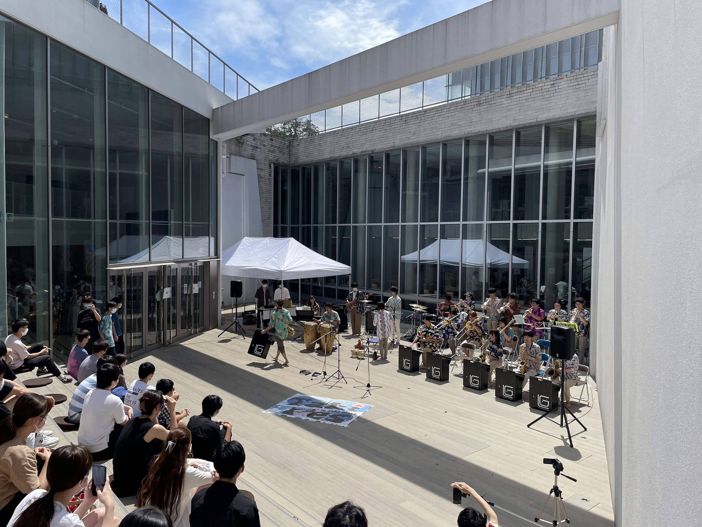

Taki Plaza でフェス！？
7月20日～7月22日の3日間にかけて、昼休みにTaki
Plazaでフェスを行いました。
東工大の５団体によるパフォーマンスはどれも圧巻、会場は大いに盛り上がりました！
来場者の方々におかれましては、新型コロナウィルス対策に関する検温・手指消毒・マスク着用のご協力、ありがとうございました。
＜出演して頂いた団体一覧＞
１日目 ロスガラチェロス
２日目 ロック研究会・FSC
３日目 ジャズ研究会・H2O
＜当日の様子＞







